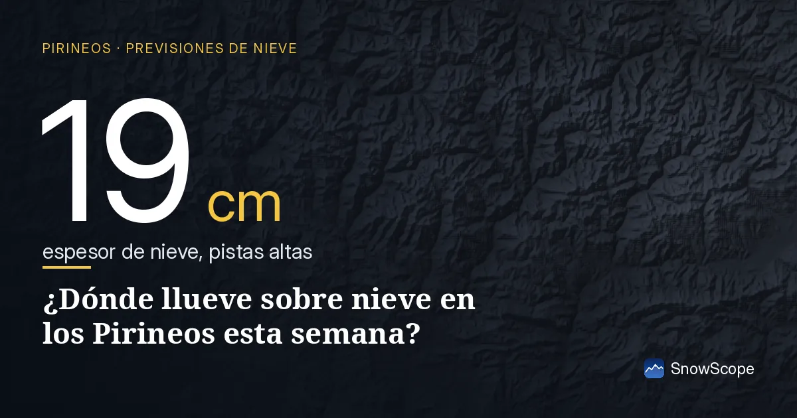

¿Dónde llueve sobre nieve en los Pirineos esta semana?
Lluvia sobre nieve caerá en varios centros de esquí de los Pirineos esta semana porque el nivel de congelación sube muy por encima de las bases de las montañas. Entre martes y miércoles, el riesgo de lluvia sobre nieve es real en las estaciones bajas, pero las altitudes altas se mantienen frías y ganan nieve nueva.
Consulta la previsión de nieve en tiempo real de Boí Taüll en la app SnowScopeEspesor de nieve, alertas de nieve polvo y mapa 3D, gratis.
El nivel de congelación sube bruscamente el lunes y martes
Hoy el nivel de 0 °C se sitúa entre 1660 m y 2290 m en toda la cordillera. Mañana salta: el punto más alto donde la temperatura del aire es de congelación alcanza 3200 m en el norte, y 3030 m a 3070 m en las estaciones del centro y sur. Este es un calentamiento importante. El miércoles trae cotas similares antes de caer de nuevo a unos 2000 m el jueves.
La pregunta práctica es: ¿dónde cae la precipitación como lluvia y dónde como nieve? SnowScope de nieve estima que la cota de nieve se sitúa unos 300 m por debajo del nivel de congelación durante las horas más cálidas. Así, el martes, la cota de nieve sube a unos 2900 m en estaciones altas como Panticosa, y 2700 a 2800 m en zonas de media montaña como Ordino-Arcalis y Canaro.
| Estación | Espesor de nieve | Nieve nueva, 72 h | Previsto, próximos días | Cota máx. |
|---|---|---|---|---|
| Boí Taüll | 8 cm | 5 cm | 9 cm | 2747 m |
| Ordino-Arcalis | 6 cm | 5 cm | 14 cm | 2626 m |
| Canaro | 13 cm | 4 cm | 11 cm | 2500 m |
| Peyragudes | 19 cm | 6 cm | 9 cm | 2360 m |
| Panticosa | 7 cm | 9 cm | 18 cm | 2202 m |

Lluvia sobre nieve llega el miércoles a las estaciones bajas
Ordino-Arcalis, Canaro, Peyragudes y Panticosa se enfrentan al riesgo de lluvia sobre nieve el miércoles cuando la precipitación cae mientras la cota de nieve se mantiene por encima de la base. Panticosa sufre lo peor: la cota de nieve alcanza 2900 m, muy por encima de su cima a 2202 m, así que todas las laderas ven lluvia. Peyragudes también se enfrenta al riesgo el jueves.
Boí Taüll es más seguro: su cima se sitúa a 2747 m, y la cota de nieve solo sube a 2600 m el martes y miércoles, dejando las laderas altas en nieve. Baqueira-Beret, aún más alto, recibe 100 por ciento de nieve en su cumbre durante todo el período.
Nieve nueva llega donde se mantiene frío
Las laderas altas a 2500 m y por encima acumulan nieve nueva a pesar de la ola de calor. Panticosa gana 18 cm en los próximos días, la mayoría cayendo como nieve por encima de 2200 m incluso cuando el nivel de congelación es alto. Ordino-Arcalis recoge 14 cm, Canaro 11 cm y Peyragudes 9 cm. En cimas altas como Boí Taüll y Baqueira-Beret, cada gota se convierte en nieve.
El patrón es claro: la masa de aire cálido eleva el nivel de congelación lo suficiente como para traer lluvia a media montaña en los próximos dos días, pero los picos altos se mantienen en la máquina de nieve. El jueves trae un enfriamiento y el nivel de congelación cae de nuevo a 1800 a 2300 m, fijando la nieve nueva entonces en las laderas.
Qué significa esto en la montaña
Si te diriges a Panticosa, Ordino-Arcalis o Peyragudes, el miércoles es el día a vigilar. La cota de nieve por encima de tu base significa lluvia sobre nieve vieja, lo que afloja la unión entre capas. Consulta el boletín oficial de aludes antes de salir fuera de pista. El manto de nieve inicial delgado amplifica el riesgo.
Boí Taüll y las estaciones más altas mantienen nieve en las laderas altas durante todo el período. El jueves, toda la cordillera se reinicia más fría, y la nieve nueva se adhiere a lo que ya se ha depositado. La región gana de 20 cm en Baqueira-Beret hasta 11 cm en Saint-Lary en los próximos cinco días.
Consejos para esquiadores
- Miércoles: evita la nieve virgen en Panticosa, Ordino-Arcalis, Canaro y Peyragudes donde llueve sobre nieve de principios de temporada. Mantente en las pistas preparadas o espera al jueves cuando refresque.
- Las altitudes altas por encima de 2500 m ganan nieve nueva limpia toda la semana. Busca esas laderas si quieres la mejor textura.
- El jueves y viernes se vuelven estables conforme el nivel de congelación baja. Ese es el momento cuando la nieve nueva se asienta y la cordillera es más segura para esquí de travesía.
- Consulta el boletín oficial de aludes de cada país antes de salir del terreno marcado.
- Las rocas aún pueden verse a través de la nieve inicial delgada incluso a altitud alta. Mantente atento en laderas pronunciadas.
Sobre estas cifras
Los espesores de nieve de las estaciones son la nieve más profunda en las pistas altas en la fecha indicada; son estimaciones para una zona, no una medida en un punto. Las previsiones pueden cambiar. Consulta siempre el boletín oficial de aludes antes de salir fuera de pista.
Boletines oficiales de aludes: Météo-France / Meteocat / AEMET
Citar este informe
Para investigación, docencia o prensa: cifras y gráficos reutilizables libremente bajo CC BY 4.0 con esta cita.
SnowScope (2026), ¿Dónde llueve sobre nieve en los Pirineos esta semana?, https://snowscope.app/blog/es/2026/11/pyrenees-freezing-level-snow-line-22-november-2026.html, consultado el 2026-11-22
SnowScope (Atlas Labs). (2026, November 22). ¿Dónde llueve sobre nieve en los Pirineos esta semana?. SnowScope snow reports. https://snowscope.app/blog/es/2026/11/pyrenees-freezing-level-snow-line-22-november-2026.html
BibTeX
@misc{snowscope2026pyreneesfreezinglevelsno,
author = {{SnowScope (Atlas Labs)}},
title = {¿Dónde llueve sobre nieve en los Pirineos esta semana?},
year = {2026},
month = nov,
howpublished = {\url{https://snowscope.app/blog/es/2026/11/pyrenees-freezing-level-snow-line-22-november-2026.html}},
note = {Published 2026-11-22 12:41 UTC; accessed 2026-11-22}
}· CC BY 4.0 · Métodos, datos y herramientas →
Boí Taüll: nieve y temperatura según la altura, este invierno vs el pasado (herramientas) →
Sigue Boí Taüll
Gratis: un aviso cuando llega la nieve y la previsión cada mañana.
Más partes de nieve

Nieve en Andorra el 17 de noviembre: manto de nieve, nieve nueva, espesor por altitud, próximos días y mejores estaciones.

El nivel de 0 °C en los Pirineos oscila entre 2230 m y 2820 m en los próximos días. La nieve está protegida de la lluvia porque la línea de nieve se mantiene baja en cada estación.

Compara Grandvalira y estaciones españolas en diciembre de 2026 en cuanto a espesores de nieve, cotas de remontes y precios desde 49,00 EUR.